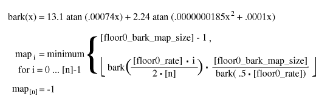
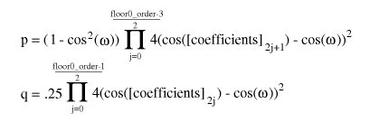
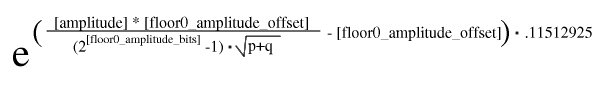

1) [floor0_order] = read an unsigned integer of 8 bits
2) [floor0_rate] = read an unsigned integer of 16 bits
3) [floor0_bark_map_size] = read an unsigned integer of 16 bits
4) [floor0_amplitude_bits] = read an unsigned integer of six bits
5) [floor0_amplitude_offset] = read an unsigned integer of eight bits
6) [floor0_number_of_books] = read an unsigned integer of four bits and add 1
7) if any of [floor0_order], [floor0_rate], [floor0_bark_map_size], [floor0_amplitude_bits],
[floor0_amplitude_offset] or [floor0_number_of_books] are less than zero, the stream is not decodable
8) array [floor0_book_list] = read a list of [floor0_number_of_books] unsigned integers of eight bits each;
An end-of-packet condition during any of these bitstream reads renders
this stream undecodable. In addition, any element of the array
[floor0_book_list] that is greater than the maximum codebook
number for this bitstream is an error condition that also renders the
stream undecodable.
Packet decode proceeds as follows:
1) [amplitude] = read an unsigned integer of [floor0_amplitude_bits] bits
2) if ( [amplitude] is greater than zero ) {
3) [coefficients] is an empty, zero length vector
4) [booknumber] = read an unsigned integer of ilog( [floor0_number_of_books] ) bits
5) if ( [booknumber] is greater than the highest number decode codebook ) then packet is undecodable
6) [lastval] = zero;
7) vector [temp_vector] = read vector from bitstream using codebook number [booknumber] in VQ context.
8) add the scalar value [last] to each scalar in vector [temp_vector]
9) [last] = the value of the last scalar in vector [temp_vector]
10) concatenate [temp_vector] onto the end of the [coefficients] vector
11) if (length of vector [coefficients] is less than [floor0_order], continue at step 6
}
12) done.
Take note of the following properties of decode:
If the value [amplitude] is zero, the return value is a length [n] vector with all-zero scalars. Otherwise, begin by assuming the following definitions for the given vector to be synthesized:

The above is used to synthesize the LSP curve on a Bark-scale frequency axis, then map the result to a linear-scale frequency axis. Similarly, the below calculation synthesizes the output LSP curve [output] on a log (dB) amplitude scale, mapping it to linear amplitude in the last step:
1) [i] = 0
2) if ( [floor0_order] is odd ) {
3) calculate [p] and [q] according to:

} else [floor0_order] is even {
4) calculate [p] and [q] according to:
 }
5) calculate [linear_floor_value] according to:
}
5) calculate [linear_floor_value] according to:

6) [iteration_condition] = map element [i]
7) [output] element [i] = [linear_floor_value]
8) increment [i]
9) if ( map element [i] is equal to [iteration_condition] ) continue at step 7
10) if ( [i] is less than [n] ) continue at step 2
11) done
 Ogg is a Xiph.org Foundation effort
to protect essential tenets of Internet multimedia from corporate
hostage-taking; Open Source is the net's greatest tool to keep
everyone honest. See About
the Xiph.org Foundation for details.
Ogg is a Xiph.org Foundation effort
to protect essential tenets of Internet multimedia from corporate
hostage-taking; Open Source is the net's greatest tool to keep
everyone honest. See About
the Xiph.org Foundation for details.
Ogg Vorbis is the first Ogg audio CODEC. Anyone may freely use and distribute the Ogg and Vorbis specification, whether in a private, public or corporate capacity. However, the Xiph.org Foundation and the Ogg project (xiph.org) reserve the right to set the Ogg Vorbis specification and certify specification compliance.
Xiph.org's Vorbis software CODEC implementation is distributed under a BSD-like license. This does not restrict third parties from distributing independent implementations of Vorbis software under other licenses.
Ogg, Vorbis, Xiph.org Foundation and their logos are trademarks (tm) of the Xiph.org Foundation. These pages are copyright (C) 1994-2002 Xiph.org Foundation. All rights reserved.